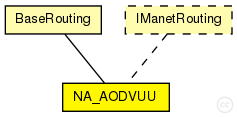

This documentation is released under the Creative Commons license
This documentation is released under the Creative Commons licenseAODVUU hacked module.
Allowed attacks:
Author: Gabriel Maciá Fernández, gmacia@ugr.es
Date: 01/22/2013
The following diagram shows usage relationships between types. Unresolved types are missing from the diagram.
The following diagram shows inheritance relationships for this type. Unresolved types are missing from the diagram.
| Name | Type | Description |
|---|---|---|
| BaseRouting | simple module |
Base module for mobile routing protocols |
| Name | Type | Default value | Description |
|---|---|---|---|
| excludedInterfaces | string | "" |
list of interfaces excluded by the manet routing protocol |
| interfaces | string | "prefix(wlan)" |
list of routing interfaces were the routing protocol is active, the prefix(namei) indicate all the interfaces with "namei" in his names |
| usetManetLabelRouting | bool | true |
the routing entries are marked IPv4Route::MANET, this label force an exact search with independent of the mask |
| useICMP | bool | true |
By default the module use the ICMP but it's necessary to activate with the method setSendToICMP(true) |
| setICMPSourceAddress | bool | false |
set the datagram source address if the address is undefined to the address of node This parameter allow that the ICMP messages could arrive to the source applications |
| manetPurgeRoutingTables | bool | true | |
| autoassignAddress | bool | false |
assign IP adresses automatically to the interfaces |
| autoassignAddressBase | string | "10.0.0.0" | |
| log_to_file | bool | false |
dump AODV log files (non RFC parameter) |
| hello_jittering | bool | true |
add a +-50ms jitter to the hello interval (non RFC parameter) |
| optimized_hellos | bool | true |
do not send hello messages if there are no active routes (non RFC parameter) |
| expanding_ring_search | bool | true |
use expanding ring search (section 6.4) |
| local_repair | bool | true |
allow the routes to be locally repaired if a node detects link failure (section 6.12) |
| rreq_gratuitous | bool | true |
force gratuitous flag on all RREQs (section 6.6.3) |
| debug | bool | false |
dump debug messages to file (non RFC parameter) |
| rt_log_interval | int | 0 |
periodically log routing table to routing table logfile, value is the interval in msecs (0 = off) |
| unidir_hack | int | 0 |
detect and avoid unidirectional links (boolean) (section 6.8) |
| receive_n_hellos | int | 1 |
receive N HELLOs before treating as neighbor (non RFC parameter) |
| wait_on_reboot | int | 1 |
wait after reboot and gather routes before sending out routing info (section 6.13) |
| ratelimit | int | 1 |
do not send out more than 10 RERR or RREQ (boolean) (section 6.3 abd 6.11) |
| active_timeout | int | 3000 |
active route timeout in (ms) (section 6.2 and 6.7) |
| llfeedback | bool | false |
allow layer2 link-detection instead of sending hello messages (section 6.10) |
| internet_gw_mode | int | 0 |
NOT SUPPORTED (boolean) (run this node as an internet gateway (non RFC parameter)) |
| internet_gw_address | string | "0.0.0.0" |
NOT SUPPORTED |
| EqualDelay | bool | true |
add a jitter to broadcast operations (RREQ, HELLO broadcast) (non RFC - omnetpp specific) |
| broadcastDelay | double | uniform(0s,0.005s) |
the delay added to broadcast operations if EqualDelay is set (used to model processing time) |
| unicastDelay | double | 0s |
a delay added to unicast messaged (i.e. data packet forwarding) (used to model processing time) |
| UseIndex | bool | false |
use the interface index instead the ip to identify the interface |
| useHover | bool | false | |
| costStatic | int | 1 | |
| costMobile | int | 4 | |
| isRoot | bool | false |
Proactive RREQ |
| proactiveRreqTimeout | int | 5000 |
5 seconds |
| propagateProactive | bool | true |
Proactive feedback |
| checkNextHop | bool | false | |
| PublicRoutingTables | bool | false |
| Name | Value | Description |
|---|---|---|
| display | i=,red;i2=status/excl3 | |
| sinkhole | ||
| class | NA_AODVUU | |
| reactive |
IP module will send control messages when no route is present to the destination |
| Name | Direction | Size | Description |
|---|---|---|---|
| from_ip | input | ||
| to_ip | output |
// // AODVUU hacked module. // // Allowed attacks: // - Sinkhole // // @author Gabriel Maciá Fernández, gmacia@ugr.es // @date 01/22/2013 simple NA_AODVUU extends BaseRouting like IManetRouting { parameters: //#NETATTACKS: Labels for the potential attacks that affect this module //#NA_SINKHOLE: labe for sinkhole attack @sinkhole; // Sinkhole attack in AODV // -------------------------------------------------------------------- //# Normal parameters. @display("i=,red;i2=status/excl3"); @class(NA_AODVUU); @reactive; // IP module will send control messages when no route is present to the destination bool log_to_file = default(false); // dump AODV log files (non RFC parameter) bool hello_jittering = default(true); // add a +-50ms jitter to the hello interval (non RFC parameter) bool optimized_hellos = default(true); // do not send hello messages if there are no active routes (non RFC parameter) bool expanding_ring_search = default(true); // use expanding ring search (section 6.4) bool local_repair = default(true); // allow the routes to be locally repaired if a node detects link failure (section 6.12) bool rreq_gratuitous = default(true); // force gratuitous flag on all RREQs (section 6.6.3) bool debug = default(false); // dump debug messages to file (non RFC parameter) int rt_log_interval = default(0); // periodically log routing table to routing table logfile, value is the interval in msecs (0 = off) int unidir_hack = default(0); // detect and avoid unidirectional links (boolean) (section 6.8) int receive_n_hellos = default(1); // receive N HELLOs before treating as neighbor (non RFC parameter) int wait_on_reboot = default(1); // wait after reboot and gather routes before sending out routing info (section 6.13) int ratelimit = default(1); // do not send out more than 10 RERR or RREQ (boolean) (section 6.3 abd 6.11) int active_timeout = default(3000); // active route timeout in (ms) (section 6.2 and 6.7) bool llfeedback = default(false); // allow layer2 link-detection instead of sending hello messages (section 6.10) int internet_gw_mode = default(0); // NOT SUPPORTED (boolean) (run this node as an internet gateway (non RFC parameter)) string internet_gw_address = default("0.0.0.0"); // NOT SUPPORTED bool EqualDelay = default(true); // add a jitter to broadcast operations (RREQ, HELLO broadcast) (non RFC - omnetpp specific) volatile double broadcastDelay @unit("s") = default(uniform(0s,0.005s)); // the delay added to broadcast operations if EqualDelay is set (used to model processing time) volatile double unicastDelay @unit("s") = default(0s); // a delay added to unicast messaged (i.e. data packet forwarding) (used to model processing time) bool UseIndex = default(false); // use the interface index instead the ip to identify the interface bool useHover = default(false); int costStatic = default(1); int costMobile = default(4); bool isRoot = default(false); // Proactive RREQ int proactiveRreqTimeout = default(5000);// 5 seconds bool propagateProactive = default(true); // Proactive feedback bool checkNextHop = default(false); bool PublicRoutingTables = default(false); gates: input from_ip; output to_ip; }
This documentation is released under the Creative Commons license